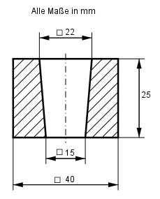

Aufgabe 274 Welche Masse m hat das Verbindungsteil, wenn seine Dichte 7,2 g/cm3 beträgt?

Volumen V = Prisma - Pyramidenstumpf Pyramidenstumpf: VPS = VPS = mm3 VPS = mm3 25 VPS = ---- * (484 + 22 * 15 + 225) mm3 3 VPS = 8 658 mm3 = 8,66 cm3 Prisma: VP = G * h = = 402 mm2 * 25 mm = 40 000 mm3 = 40 cm3 m = (VP - VPS) * р = = (40 cm3 - 8,66 cm3) * 7,2 g/cm3 = 225,6 g